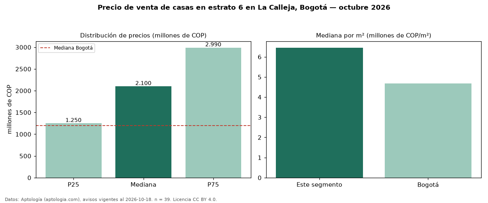

Precio de venta de casas en estrato 6 en La Calleja, Bogotá — octubre 2026
En La Calleja (localidad de Usaquén), Bogotá, la mediana de precio de venta de casas en estrato 6 es COP 2,10 mil millones, según 39 avisos vigentes. Eso es 49 % más que la mediana de toda la vivienda de estrato 6 de La Calleja (COP 1,41 mil millones, n = 105); este segmento reúne el 37 % de esos avisos. Por metro cuadrado, la mediana es COP 6,46 millones/m² (n = 39), 15 % por debajo del conjunto de referencia (COP 7,55 millones/m²). El área mediana anunciada es 321 m². El segmento con más oferta es el de 3 o más habitaciones (39 avisos, mediana COP 2,10 mil millones). La mitad central de los avisos va de COP 1,25 mil millones a COP 2,99 mil millones (razón 2,4), una dispersión alta. La administración mediana declarada es COP 998.000 al mes (n = 29). La mediana de todas las casas en venta de Bogotá es COP 1,20 mil millones (+75 % de diferencia). Datos: Aptología (aptologia.com), CC BY 4.0 — https://www.aptologia.com/casas-en-venta/bogota/la-calleja. Archivos: PDF, CSV con las cifras y gráfica PNG.

| Avisos únicos | 39 |
|---|---|
| Percentil 25 | COP 1.250.000.000 |
| Mediana | COP 2.100.000.000 |
| Percentil 75 | COP 2.990.000.000 |
| Mediana por m² | COP 6.456.310 |
Fuente: avisos vigentes de portales inmobiliarios recopilados por Aptología, deduplicados (mínimo 30 avisos únicos por celda). Precios pedidos, no cerrados. Fecha: 2026-10-18.